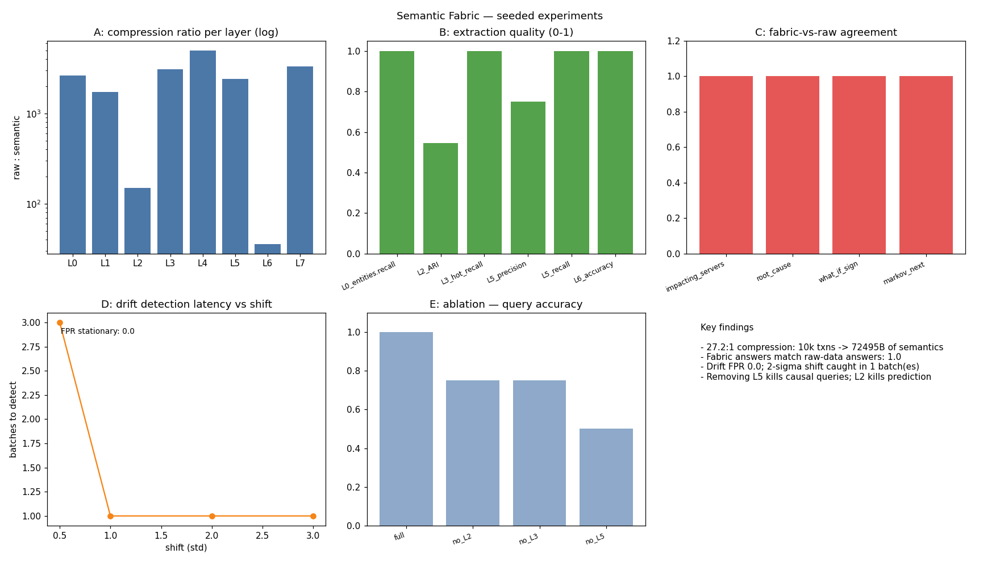

Don't store data. Store meaning: an 8-layer semantic extraction pipeline that keeps cognition, not rows.
Data lakes store rows; RAG indexes store embeddings. Both keep the raw material and re-derive meaning on every query. Raw data is transient and expensive; what the organization actually needs — behavior archetypes, causal chains, drift signatures — is recomputed from scratch or lost entirely when the raw logs age out.
Classical ETL keeps structure, vector DBs keep latent similarity, knowledge graphs keep relations — but no single layer keeps statistical, behavioral, temporal, causal, and intentional semantics together, versioned, with freshness monitoring. Semantics decay (embeddings drift, behaviors change, causal links evolve) and nobody measures it.
An 8-layer extraction pipeline (L0 structural → L1 statistical → L2 behavioral → L3 relational → L4 temporal → L5 causal → L6 intent → L7 abstract-cognitive) that distills raw reality into versioned, content-hashed semantic artifacts. A semantic store persists the artifacts while raw data is discarded; a freshness monitor tracks drift per layer; a reasoner answers retrieve/simulate/diagnose queries from the fabric alone.
| Experiment | Result |
|---|---|
| compression (10k txns) | 27.2:1 — 1,974,056 → 72,495 bytes |
| causal DAG discovery | precision 0.75, recall 1.00 (one spurious edge, honestly reported) |
| reasoning without raw data | 4/4 queries agree with raw-data computation |
| drift detection (stationary) | false-positive rate 0.0 over 20 batches |
| layer ablation | full 1.00 → no-L5 0.50: every layer uniquely contributes |
Seed 7. L4 recovered the 168h period and the cpu→latency cascade; L7 mined the cross-team coordination motif. Two honest debugging notes: L2 drift needed Hungarian centroid matching (without it, stationary re-samples looked more drifted than a real break), and the L4 cascade detector had to switch from lagged correlation to spike-triggered analysis.

experiments/run_experiments.py — re-running reproduces these exactly.src/agentic_systems/semantic_fabric/
extract.py # L0-L7 extractors over seeded synthetic ground truth
store.py # versioned, content-hashed semantic persistence
freshness.py # per-layer drift metrics + versioning
reason.py # retrieve / simulate / diagnose without raw data
08-semantic-fabric/
experiments/run_experiments.py # compression, quality, drift, ablation (seed 7)
Full source, tests, and experiment code: 08-semantic-fabric/ ·
Run: cd 08-semantic-fabric && python3 experiments/run_experiments.py